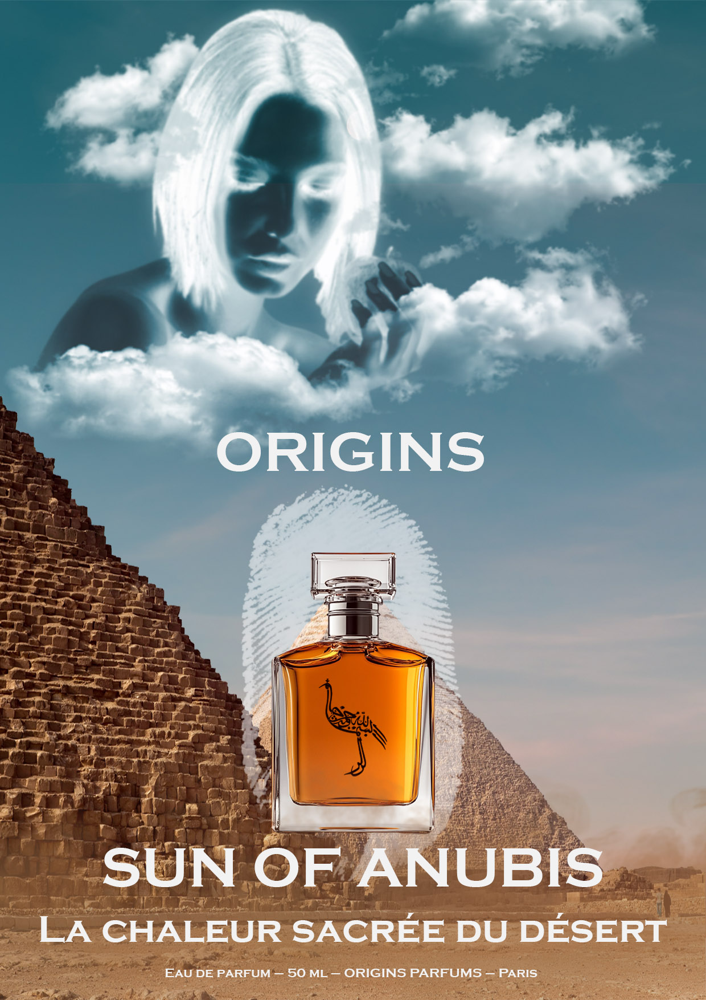
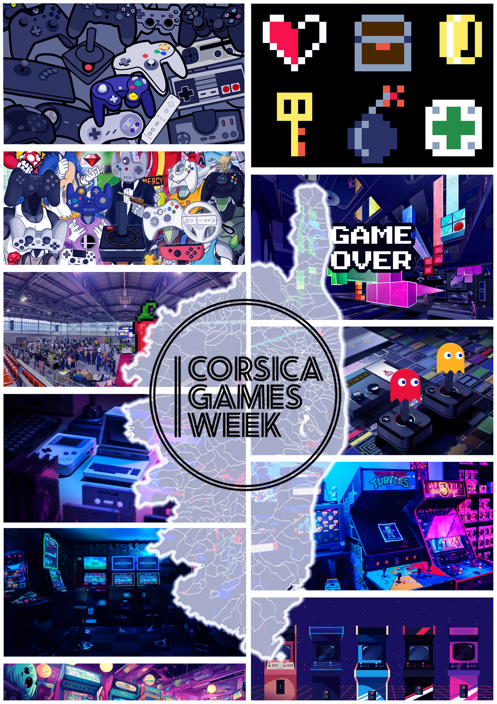
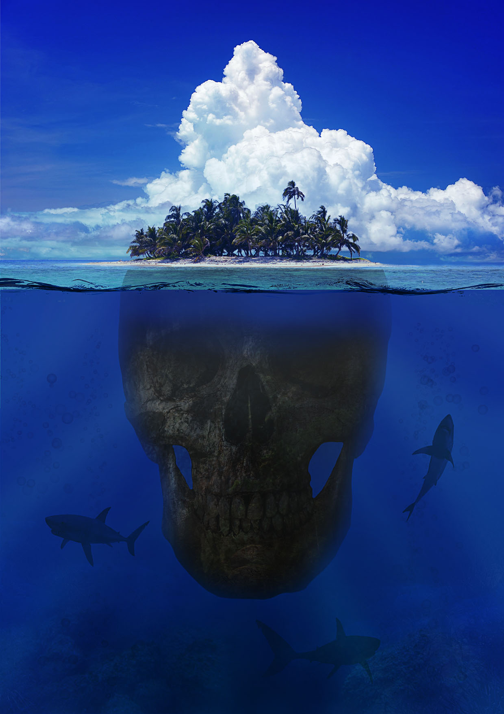

Projet 1
Ce projet, réalisé sur Photoshop, consiste en la création d’une affiche événementielle pour un festival de jazz fictif se déroulant au Théâtre de Verdure du Casone à Ajaccio.
Retrouvez ici une sélection élargie de mes projets :
Ce projet, réalisé sur Photoshop, consiste en la création d’une affiche événementielle pour un festival de jazz fictif se déroulant au Théâtre de Verdure du Casone à Ajaccio.

Ce projet, réalisé sur Adobe Illustrator, consiste en la création d'n portrait vectorisé à partir d'une photographie de référence. L'objectif principal était de traduire des formes organiques complexes en tracés vectoriels précis et épurés.

Ce projet consiste en la création d'un visuel publicitaire pour un parfum fictif nommé "Sun of Anubis" de la marque Origins. L'objectif était de créer une composition onirique et prestigieuse en utilisant des techniques de montage avancées.

Ce projet, réalisé sur Adobe Photoshop, est une affiche promotionnelle pour un événement dédié aux jeux vidéo en Corse. L'objectif était de créer une "mosaïque" visuelle représentant la richesse et l'évolution de l'univers vidéoludique.

Ce projet consiste en la création d'un visuel surréaliste utilisant des techniques de photomanipulation avancées. L'idée était de représenter la métaphore de "la partie immergée de l'iceberg" en remplaçant la base d'une île paradisiaque par un crâne humain monumental.

Ce projet, développé avec PHP et VS Code, consiste en la création d'une application de messagerie instantanée simplifiée. L'objectif était de mettre en place une interface de communication fonctionnelle permettant l'échange de messages entre utilisateurs sans base de données complexe.